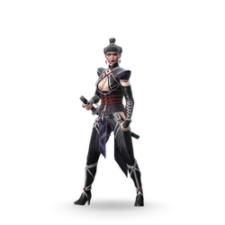
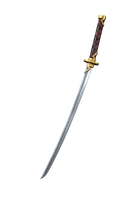
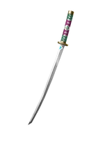
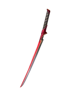

Кибо

Редкость: Epic
Пол: Female
Фракция: Heralds
Энергия: Shadow
Класс: Normal
Добыча: Rift Keys and Chests
| Название | Редкость | Изображение |
|---|---|---|
| Одиночка | Обычный | |
| Багровая Смерть | Редкий | |
| Дуэлянт | Эпический |  |
| Клятва Красного Рассвета | Эпический | |
| Приносящий восход солнца | Эпический | |
| Зов Безмолвного поместья | Сезонный | |
| Безупречная месть | Сезонный | |
| Гремучая змея | Сезонный |
| Название | Редкость | Изображение |
|---|---|---|
| Один настоящий товарищ | Обычный |  |
| Солидют | Обычный | |
| Серое перо | Обычный | |
| Прощальный поцелуй | Обычный | |
| Сплав киноварь | Обычный |  |
| Первый Луч | Обычный | |
| Трофейная катана | Обычный |  |
| Острый изумруд | Обычный | |
| Бездна | Редкий |  |
| Парадигма | Редкий | |
| Цветущая страсть | Редкий |  |
| Жнец ненависти | Редкий |  |
| Взгляд в ничто | Редкий | |
| Алая месть | Эпический |  |
| Название | Описание | Изображение |
|---|---|---|
| Точность теней | Успешная дальняя атака дает Кибо много Теневой Энергии. |  |
| Жестокий натиск | Урон от Shadow Onslaught увеличен. |  |
| Ловкость Теней | «Теневой натиск» активируется, когда Кибо подпрыгивает. |  |
| Совершенство тени | Получив смертельный урон, Кибо испускает теневой импульс, получает много теневой энергии и восстанавливает часть здоровья. | |
| Владелец | Кибо получает больше теневой энергии для своих атак. |  |
| Прямо к делу | Первое использование способности Кибо «Тень» в раунде наносит повышенный урон. |  |
| Отступление Тени | «Теневой натиск» активируется, когда Кибо использует свою дистанционную атаку. |  |
| На грани | Если у Кибо низкий уровень здоровья, активируется «Теневой натиск». | |
| Уловка наставника | Кибо получает новую способность Тени. | |
| Превосходство Тени | Кибо неуязвим, пока активен Теневой натиск. | |
| Судьба силы | У героев вашей команды повышен критический урон. |  |
| Судьба безжалостности | У героев вашей команды увеличен урон от дальних атак. |  |